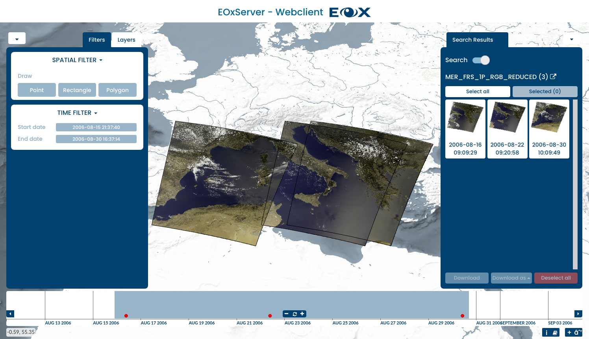

Observera
This project is only included on the OSGeoLive virtual machine disk (VMDK)
Snabbstart för EOxServer¶
EOxServer är en server för presentation av stora dataarkiv och metadata för jordobservation (EO) via öppna standarder. Den bygger på en Open Source-stack av programvara som inkluderar Python, MapServer, Django/GeoDjango, GDAL, PROJ och en SpatiaLite eller PostGIS databas.
Denna snabbstart beskriver hur du gör:
Använd webbklienten för att visa, filtrera, dela upp och ladda ner EO-data
Använd Admin Client för att inspektera EO:s dataarkiv
Starta EoxServer¶
Välj . Detta startar en webbläsare som visar demonstrationsinstansen som finns på http://localhost/eoxserver/

Arbeta med webbklienten¶
Klicka på länken Web Client för att öppna den integrerade EOxServer-klienten.
I den här klienten kan du utforska innehållet i EOxServer-instansen. Demonstrationsinstansen är fylld med ENVISAT MERIS-scener.

Klienten består av kartvyn och widgetar som innehåller de viktigaste interaktionerna. Huvudområdet är klientens kartwidget med en uppsättning dataset som redan visas. Längst ner hittar du widgeten timeslider, som gör att du kan utforska innehållet i tidsdimensionen.
{kind=link}
Widgeten Layer Selection kan expanderas genom att klicka på kugghjulet längst upp till vänster och gör det möjligt att aktivera eller inaktivera synligheten och konfigurera renderingen av lagren. Du kan också visa eller dölja gatuöverlägget och välja bakgrundslager. Fliken Filters i den här widgeten gör det möjligt att söka efter olika spatiala och tidsmässiga värden.

På samma sätt som på en karta kan du zooma och panorera den aktuella intressanta tiden och välja en intressant tid genom att rita på det område som innehåller de röda prickarna. Du kan också hålla muspekaren över en punkt för att se datasetets ID. Genom att klicka på punkten zoomar kartan automatiskt till datasetets omfattning.

När ett spatialt filter är aktiverat kan du rita en bounding box, polygon eller punkt direkt på kartan. Den ritade funktionen används för frågor i Download Tool.

Du kan få mer information om tillgängliga tjänster och metadata för den valda produkten genom att hålla muspekaren över produkten i sökresultatwidgeten och klicka på ikonen längst upp till höger.

När Download Tool är aktiverat skickas en fråga till servern. Denna fråga inkluderar den valda intressanta tiden och avgränsningsrutan. Resultaten visas i widgeten Download, där du kan välja format, projektion och dataset som ska laddas ner.
Detta var en snabb introduktion till EOxServer Web Client. Mer information om detta ämne finns i onlinedokumentationen.
Arbeta med adminklienten¶
På EOxServers huvudsida klickar du på länken Admin Client och loggar in med användaren admin och lösenordet admin.

”Admin Client” är Djangos standardadministratör och låter dig konfigurera tillgängliga data. Känn dig fri att utforska klienten. Mer information finns i guiden operations’.

Du kan till exempel inspektera den samling som laddas som standard genom att klicka på länken ”Samlingar” och sedan på länken ”MER_FRS_1P_RGB_reduced”.

Du kan förhandsgranska skydden genom att gå tillbaka och klicka på länken ”Skydd”.

What next?¶
Det här är en enkel demonstration, men du kan göra mycket mer med EOxServer. Projektets webbplats innehåller en hel del resurser som hjälper dig att komma igång. Här är några resurser att kolla in härnäst:
Se EOxServer Overview för mer information.
Läs Handbok för drift av OxServer <https://docs.eoxserver.org/en/stable/users/operations/index.html>`_.
Läs EOxServer Basics.
Är du redo att använda EOxServer? Gå då med i gemenskapen på e-postlistorna <https://docs.eoxserver.org/en/stable/users/basics.html#where-can-i-get-support>`_ för att utbyta idéer, diskutera potentiella förbättringar av programvaran och ställa frågor.